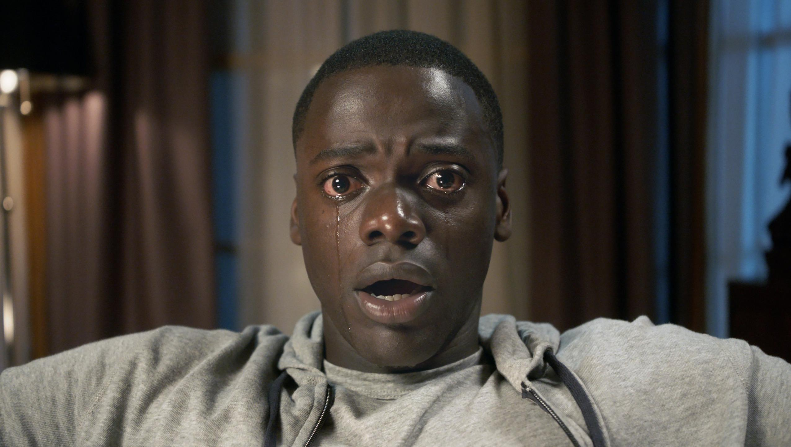

Kapan - Get Out
Korku türünde her yıl mutlaka bir filmin aniden ortaya çıkarak eleştirmenler tarafından göklere çıkarıldığına ve düşük bütçesine rağmen iyi bir gişe başarısına ulaştığına şahit oluyoruz. 2016’da Fede Alvarez’in Don’t Breathe’i, 2015’te Robert Eggers’in The Witch’i, 2014’te ise David Robert Mitchell’ın It Follows’u türün en çok konuşulan ve övülen filmlerinin başında gelmişti. Türde bu yılın bombası ise Amerikalı komedyen Jordan Peele’nin ilk yönetmenlik deneyimi olan Get Out oldu. Öyle ki, ülkesinde vizyona girdiğinden bu yana aldığı övgülerin ardı arkası kesilmedi; 4,5 milyon dolarlık bütçesine rağmen sadece Amerika’da 168 milyon dolar hasılat elde ederek gişeyi salladı ve nihayet onca merak duygusunun ardından Türkiye’de vizyona girdi.
Get Out’u yakın zamandaki Don’t Breathe, The Witch, It Follows gibi türdeşlerinden ayıran en önemli nokta filmin salt bir korku/gerilim filmi olmaması. Özellikle yönetmeni Peele’nin komedyen olmasının bunda payı büyük, zira Get Out’un korku ve hicvin iki önemli bileşeni olarak tasarlandığını, gerilimini ustaca adım adım “ırkçılık” teması üzerinden artırırken aniden izleyiciye rahatsız edici kahkahalar attırabildiğini, hatta fantezi ögelerinin devreye girmesiyle iyice uçuk noktalara varabildiğini belirtmek gerek.
Peele, gerginlik, mizah ve korku ile türler arasındaki dengeyi başarılı bir şekilde ortaya koyarken, liberal Amerika’nın ırkçılığını da sert bir şekilde eleştiriyor. Özellikle günümüzde artık ırkçılığın kalmadığını savunan bazı Amerikalılar bunu genelde “Benim de siyahi arkadaşlarım var” cümlesiyle dile getirir, ki bu kelimeleri ülkemizde “Benim de Kürt arkadaşlarım var” ya da “Benim de eşcinsel arkadaşlarım var” gibi gülünç savunma mekanizmaları şeklinde sıklıkla duymak mümkündür. Peele, görünürdeki bu tutumun perde arkasını her sahnede biraz daha deşerek insanın içindeki “saklı” ırkçılığı ve nefreti gün yüzüne çıkarıyor. Ana karakterin üzerindeki paranoyayı adım adım ama sürekli tutarak odak noktasını kaybetmiyor, baskılar ve gerilimler ilerleyen her sahnede kademeli olarak ortaya çıkıyor.
Get Out için birçok yönden Black Mirror benzetmesi yapılacaktır. Filmin afişinin Black Mirror’ın afişine çok benzemesi, başrolü Daniel Kaluuya’nın Black Mirror’ın en iyi bölümlerinden “Fifteen Million Merits”in de başrolü olması ve hikaye/görsel dünya bakımından zekice ve eleştirisi keskin şekilde kurulması bu eğilimi açığa çıkarıyor. Özellikle Missy (Catherine Keneer) ve Chris (Daniel Kaluuya) arasındaki hipnoz sahnesi gerilimin zirveye çıkmasıyla ve görsel açıdan şok ediciliğiyle Black Mirror’ın güçlü bölümlerinden birini izliyormuş hissiyatı veriyor.
Peele, birbirine taban tabana zıt olan korkmak ve gülmek eylemlerini filmin başından sonuna kadar türün klişelerini kullanarak sağlıyor. Finale doğru gerçekleşen bir “twist” haricinde filmin tüm hamlelerini tahmin etmek, buna rağmen filmi keyif alarak izlemek mümkün. Finalde twist zannettiğimiz olayın da zaten filmin akışı boyunca yönetmen tarafından defalarca ipucu olarak verildiğini anlamak soru işaretlerini ortadan kaldırıyor. Böylelikle, korktuğumuz, gerildiğimiz, kahkaha attığımız, eğlendiğimiz, ırkçılığa dair sert ve cesur eleştirileriyle de düşündüğümüz çılgın bir tür kombini çıkıyor ortaya.
Get Out’un cast seçimine ayrı bir parantez açmak gerekir ki, gerilimine ve mizahına keskin şekilde etki eden performanslar filmin bu başarısında büyük pay sahibi. Genelde sinemada yardımcı rollerde – en son Sicario’da- gördüğümüz İngiliz aktör Daniel Kaluuya, özellikle hipnoz sahnesindeki ikonik olacak ifadesi başta olmak üzere samimiyetini ve enerjisini izleyiciye geçirecek şekildeki performansıyla çok iyi bir seçim ve keşif. Get Out’un üstün başarısının ardından Kaluuya’yı bundan sonra yardımcı rollerden başrole geçirecek sürece tanıklık edeceğiz gibi gözüküyor. Beş senedir Girls dizisinde Marnie rolünde izlediğimiz dizi oyuncusu Allison Williams ise sinemadaki ilk ciddi projesinde şaşırtıcı derecede masum ama ürkütücü gözükmeyi başarıyor. Williams’ın da Hollywood’a geçiş sürecinde Get Out’taki performansı büyük önem taşıyacaktır. Catherine Keener ve Bradley Whitford’un sinir bozucu tekinsizlikleri filmi sürükleyen yardımcı karakterlerde zirve yaptırırken, Rod rolündeki LilRey Howery ise replikleri ve mimikleriyle filmin mizahi yönünü sürükleyen kişi olarak öne çıkıyor.
 Interstellar
Interstellar Oblivion
Oblivion The Martian
The Martian Arrival
Arrival Mad Max
Mad Max Upgrade
Upgrade John Wick
John Wick SAW
SAW The Conjuring
The Conjuring Us
Us Zootopia
Zootopia The Incredibles
The Incredibles Inside Out
Inside Out Spider-Man
Spider-Man.svg)